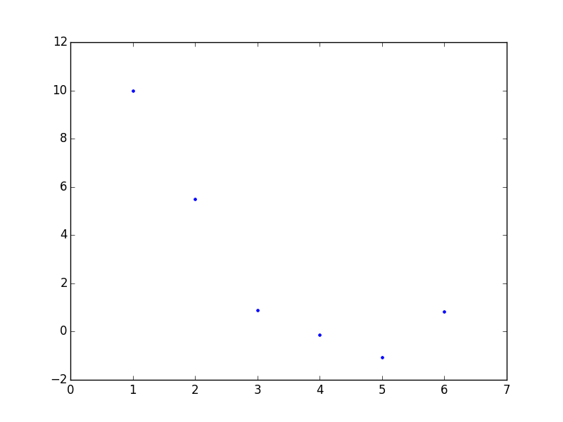
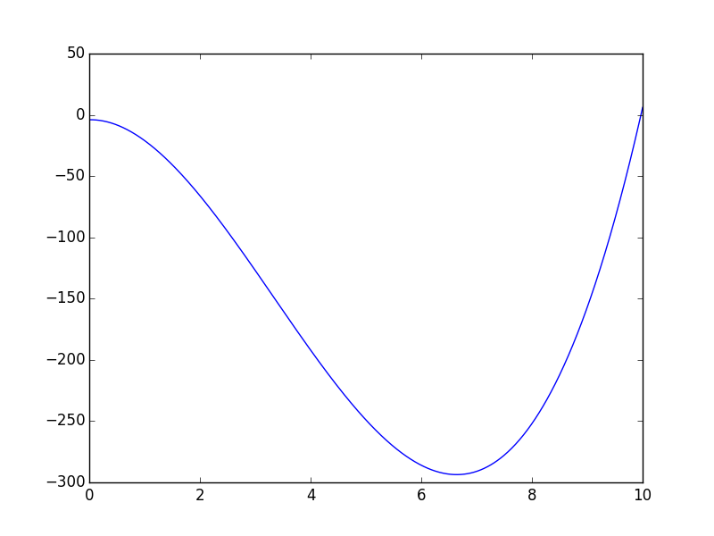
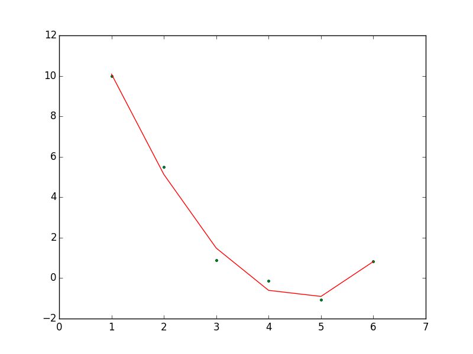

Diyelim ki elimizde alttaki veri var.
x = np.arange(1,7)
y = np.array([10, 5.49, 0.89, -0.14, -1.07, 0.84])
plt.plot(x,y,'.')
plt.ylim(-2,12)
plt.xlim(0,7)
plt.savefig('compscieng_1_21_01.png')

Bu veriye istediğimiz kadar bükümü olan bir eğri nasıl uydururuz? "İstediğimiz kadar bükümü olan eğri" polinom çağrısı yapabilir.. Mesela bir polinom eğri,
$$ y = c_1 x^3 + c_2x^2 + c_3x + c_4 $$
olarak gösterilebilir. Mesela bazı gelişigüzel sabit değerler $c_1=1,c_2-20,c_3=1,c_4=-4$ sabitlerinden alttaki görüntü çıkar,
x2 = np.linspace(0,10,1000)
c_1 = 2.; c_2 = -20.; c_3 = 1.; c_4 = -4
y2 = c_1*x**3 + c_2*x**2 + c_3*x + c_4
plt.plot(x2,y2)
plt.savefig('compscieng_1_21_02.png')

Eğri iki kere bükülebiliyor çünkü formül küpsel. Karesel olsa sadece bir kere bükülebilirdi. Peki karesel, ya da küpsel ya da daha üst derecedeki polinomları veriye nasıl uydururuz? Acaba lineer regresyonu bir şekilde kullanabilir miyiz? Ama lineer regresyon, adı üstünde, "lineer", yani doğrusal. Doğrusal olmayan bir şeyi nasıl uyduracağız? Şimdi lineer regresyonun neyi uydurduğunu hatırlayalım,
$$ y = c_1 z_1 + c_2 z_2 + .. + c_nz_n $$
Bu çok boyutlu, her biri birer vektör olan $z_1,..,z_n$ ile tek vektör $y$ ilişkisini girdi olarak alıyor (üstteki formülü ya vektörsel işlem olarak ya da $y,z_i$ öğelerinin teker teker formüle geçildiği şekilde görebiliriz).
Acaba şöyle bir numara yapamaz mıyız? Eğer elimizdeki tek boyutlu veriyi alıp, onun tamamının bir kere karesini, bir kere küpünü, vs. ayrı ayrı alıp her sonucu sanki ayrı bir boyutlarmış gibi lineer regresyona verirsek, otomatik olarak eğri uydurmuş olmaz mıyız ?! Yani üstteki örnek için $z_1=x^3,z_2=x^2,z_3=x,z_4=1$ olacak, matris formunda,
$$ A = \left[\begin{array}{rrrr} x_1^3 & x_1^2 & x_1 & 1 \\ x_2^3 & x_2^2 & x_2 & 1 \\ \vdots & \vdots & \vdots & \vdots \\ x_m^3 & x_m^2 & x_m & 1 \end{array}\right] $$
ki $x_i$, $x$ vektörünün tek bir öğesini temsil ediyor. Gerisi bildiğimiz En Az Kareler yöntemi ile $Ax=b$'yi, ya da üstteki notasyona göre $Ac=y$ çözmek, $(A^TA)^{-1}A^Tc$ ile (tabii QR kullanmak daha iyi ama bu basit örnek için önemli değil). Baştaki örneği çözelim mesela
import scipy.linalg as lin
A = np.array([x**3, x**2, x, np.ones(len(x))]).T
res = np.dot(np.dot(lin.pinv(np.dot(A.T,A)),A.T),y)
print A, '\n\n', res
[[ 1. 1. 1. 1.]
[ 8. 4. 2. 1.]
[ 27. 9. 3. 1.]
[ 64. 16. 4. 1.]
[ 125. 25. 5. 1.]
[ 216. 36. 6. 1.]]
[ 0.03925926 0.42313492 -6.5032672 16.12666667]
Kütüphane çağrısı polyfit kullanırsak,
print np.polyfit(x,y,3)
[ 0.03925926 0.42313492 -6.5032672 16.12666667]
Tıpatıp aynı sonuç çıktı, çünkü büyük bir ihtimalle polyfit aynı
tekniği kullanıyor!
plt.plot(x,y,'.')
plt.ylim(-2,12)
plt.xlim(0,7)
yy = res[0]*x**3 + res[1]*x**2 + res[2]*x + res[3]
plt.plot(x,y,'.')
plt.hold(True)
plt.plot(x,yy)
plt.savefig('compscieng_1_21_03.png')

Uyum fena değil! Not: eğri kesikli çıktı çünkü çok az sayıda veri var.